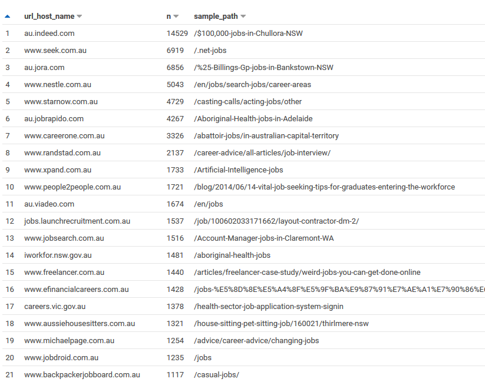

Extracting Job Ads from Common Crawl
I’ve been using data from the Adzuna Job Salary Predictions Kaggle Competition to extract skills, find near duplicate job ads and understand seniority of job titles. But the dataset has heavily processed ad text which makes it harder to do natural language processing on. Instead I’m going to find job ads in Common Crawl’s, a dataset containing over a billion webpages each month.
The Common Crawl data is much better because it’s longitudinal over several years, international, broad and continually being updated. The downside is that it’s not a nicely formatted CSV; you have to find the job ads in the billions of pages, download them and extract and integrate them. But by being thoughtful about our approach we can get a good sample fairly easily.
Finding Australian Job Ads
We’re going to find job ads by using a simple heuristic; many job ads have /job/ or /jobs/ in the URL. This is going to miss a lot of jobs; some companies use something like /job-listing, some put it all on the /careers/ page, some use something else entirely. But using this heuristic most things we find are likely to be job ads, and not articles about jobs or career development.
I also want to start by focusing on Australian job ads, because I live in Australia it’s the most relevant to me and the easiest for me to interpret. I’ll do this by only searching for .au domains, or for subdomains starting with au. (as some multinational companies do this to localise). This isn’t perfect either; many multinational websites put Australian jobs on their careers website that isn’t Australian, but again most of the jobs we’ll find are Australian.
This is straightforward to do with Common Crawl’s Columnar Index in AWS Athena
SELECT url_host_name, count(*) as n, arbitrary(url_path) as sample_path
FROM "ccindex"."ccindex"
WHERE crawl = 'CC-MAIN-2020-16'
AND subset = 'warc'
AND (url_host_tld = 'au' or url_host_name like 'au.%')
AND url_path like '%job%'
group by 1
order by n desc
limit 200The top results contain some large recruiters, job boards and government job search websites. It seems like a promising place to start.

Downloading and Evalauting the Job Ads
Using the domains and paths from Athena I can start listing and extracting URLs using the Common Crawl Capture Index. In particular cdx_toolkit to get all pages with the appropriate prefix.
import cdx_toolkit
cdx = cdx_toolkit.CDXFetcher(source='cc')
objs = list(cdx.iter('www.randstad.com.au/jobs/*',
from_ts='202004', to='202005',
filter=['status:200']))I can look through the URLs to make sure they look write, and preview the HTML content by saving to a file and opening in a browser.
with open('test.html', 'wb') as f:
f.write(objs[0].content)Some of the paths turned out to be job search listings rather than a job ad. These would be useful for seeing how the market has changed over time, but for my purposes I just focused on Job Ads. Also some websites don’t have any job pages in Common Crawl because it’s disallowed in robots.txt.
Extracting job ad data
My technique for extracting the job data was to first view the ad in a browser and find some key metadata (like the location or salary). Then I would view the source of the page and search for that metadata; there were a few tools I could use to extract it.
JSON Linked Data
Sometimes the data would occur in a <script type='application/ld+json'> object. This is JSON Linked Data which contains a structured representation of the job ad. It’s frequently put in job ads because Google promotes it in search results.
I used the extruct library to extract this. When I first ran it I was getting the error rdflib.plugin.PluginException: No plugin registered for (json-ld, <class 'rdflib.serializer.Serializer'>). However a comment on a github issue let me to a solution.
from rdflib.plugin import register, Serializer, Parser
register('json-ld', Serializer, 'rdflib_jsonld.serializer', 'JsonLDSerializer')
register('json-ld', Parser, 'rdflib_jsonld.parser', 'JsonLDParser')Then it was straightforward to extract the job ad as a structured object:
[data for data in extruct.extract(objs[0].content)['json-ld'] if data['@type'] == 'JobPosting']The best thing is it’s a standard format that’s used accross many websites and can contain a lot of information like the title, location, salary, industry, skills and job ad details.

Sometimes it’s contained in microdata instead, which is also captured by extruct.
[x for x in extruct.extract(objs[0].content)['microdata'] if x['type'] == 'http://schema.org/JobPosting']Javascript objects
Sometimes there’s no Job Posting JSON Linked Data or Microdata on the page, but there is a Javascript object containing all the relevant information. Then if you can consistently find that object you can extract the structured data from it.
I wrote a simple parser to find the entire extent of a Javascript object by counting curly brace depth (ignoring quotes):
def get_object(text):
depth = 0
inquote = False
escape = False
for idx, char in enumerate(text):
if escape:
escape = False
continue
if char == '"':
inquote = not inquote
if char == '\\':
escape = True
if (not inquote) and char == '{':
depth += 1
if (not inquote) and char == '}':
depth -= 1
if depth <= 0:
break
return text[:idx+1]Then once you have the Javascript string you can parse it into a Python object. For simple objects json.loads will do the trick, but if it’s more Javascript than JSON then you may need demjson.
import demjson
# obj_start_text is the text before the opening brace
def extract(text):
start_idx = text.find(obj_start_text) + len(obj_start_text)
object_text = get_object(text)
return demjson.decode(object_text)Searching HTML with BeautifulSoup
If you can’t get the data from an API or a structured object you will have to parse the HTML. This tended to be common with government job boards.
Finding the right patterns is a bit of an art and it’s worth inspecting the page with developer tools to look for interesting tags or properties to find what you need. I find using CSS Selectors with Beautiful Soup’s select method, or XPath using lxml (or html5-parser) tend to be quite effective.
You’ll probably need to do some specific text search and clean up as well to fix the documents.
Next Steps
Putting all this together I can make a pipeline for extracting several hundred job ads from each monthly Common Crawl. It’s just a matter of building up a list of URLs and transformation rules and adding them to my job advert analysis repository.
The easiest case is extracting JSON-LD from Common Crawl, and in fact the Web Data Commons does this on a regular basis. I want to investigate this to broaden the sources of data from just the ones with /job/ or /jobs/ in their URL.